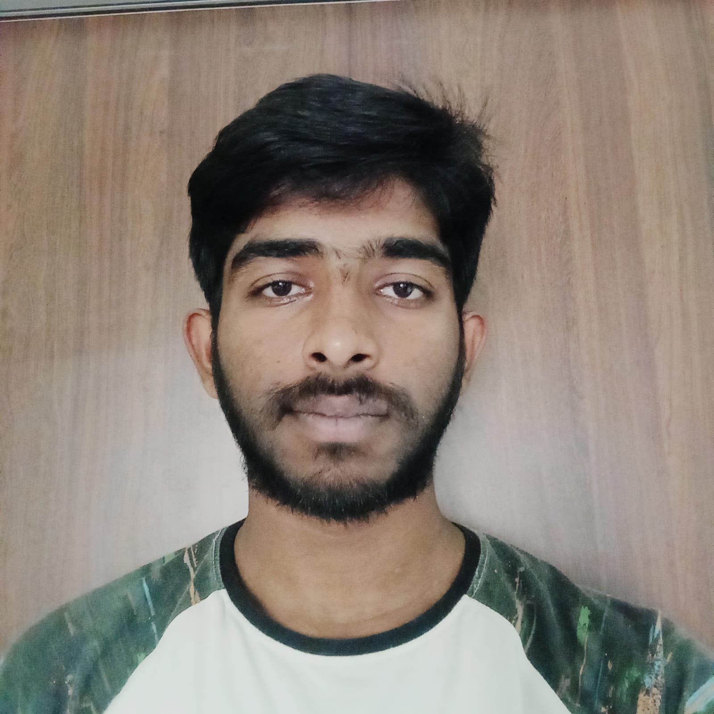

Mithun Gowda M
33 Kanaka ,om shakthi temple
3rd main kanakagiri
Bangalore, Karnataka - 560043
Email: mim22cs@cmrit.ac.in
Mobile: +91 6366049708

Career Objective
Determined and hardworking person looking for a challenging job within a rapidly growing organization where I can implement my technical skills and theoretical knowledge in real-time approaching situations to benefit both my career and the organization.
Education Qualification
| Qualification | Institution | Year | Score |
|---|---|---|---|
| Bachelor of Engineering – Information Science and Engineering | CMR Institute of Technology, Bengaluru | 2026 (Pursuing) | 8.86 CGPA |
| Pre-University Course – Science | Miranada Composite Pu College,Jeevanbheemanagar | 2021 | 98.67% |
| SSLC | Vivekananda Vidhya Mandira School ,Hunasikote 563137 | 2019 | 96.48% |
Technical Skills
- Programming Languages: Basic knowledge in C Programming, C++, Python, and Java
- Database: MySQL (basic)
Projects
- Movie Success Prediction using ML: Developed a system to predict the success of upcoming movies using machine learning techniques in Python. Tools used: Python, Excel.
- Hospital Management System: Built a platform for storing and maintaining hospital records with interfaces for patients, doctors, and admins. Tools used: HTML, CSS, PHP, MySQL Server.
- Smart Attendance using Face Recognition: Demonstrated ability to create scalable, user-friendly, and efficient automated attendance solutions. Tools used: Python, OpenCV, Haar Cascade Classifier, Face Recognition API.
Achievements & Activities
- Placement Coordinator, CMRIT
- President of Startup Club & Promotional Head of Innovation Club, CMRIT
- Gold medalist in Volleyball at the district level
Co-Curricular Activities & Extra-Curricular Activities
Co-Curricular Activities
Seminars:
- Attended “5th Guru Kalam Memorial Lecture & IIF Award Ceremony” on 6th November 2021 at Seasons Hall, Royal Orchid Hotel, Old Airport Road, Bengaluru.
- Attended a seminar on the topic “Problem Solving & Ideation” on 20th November 2021, CMRIT.
Certifications:
- Certified on the topic “C Programming for Beginners” from Udemy.
- Certified in “Introduction to Python Programming and Java Tutorial for Beginners” from Udemy.
Extra-Curricular Activities
- Blood Donation Camp organized by Rotaract club of CMRIT.
- Organized Inquizition Grill and Entrizm for Start-up club of CMRIT.
- Organized Monologue & Improv event for Theatre club of CMRIT.
Personal Details
Date of Birth: 26/07/2003
Gender: male
Nationality: Indian
Marital Status: Single
Permanent Address: tekal, tq: Malur, dist:Kolar
Languages Known: Kannada, English,Telugu
Hobbies: Athletics, Outdoor games